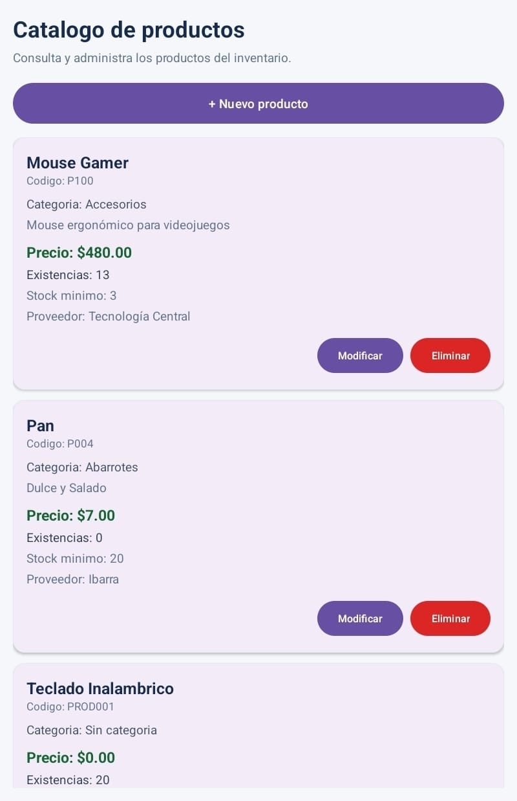

StockManager
Aplicacion desarrollada para gestionar productos de un inventario, permitiendo organizar registros y realizar operaciones de consulta y modificacion de informacion.
Implementar persistencia de datos y operaciones para administrar productos.
Comprender la relacion entre entidades, base de datos local y operaciones CRUD.